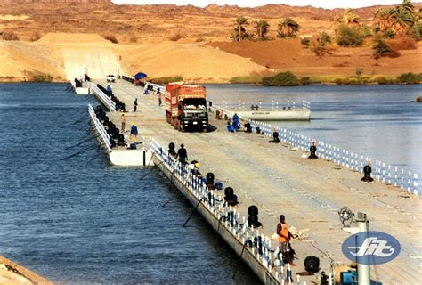

Project Overview
项目概述
从古代“以舟为梁”到现代智能自适应的浮桥技术演进

浮桥是人类历史上最古老的桥梁形式之一，它利用水浮力的自然规律支承自身恒载及活载，以浮动基础代替复杂的水下固定基础。目前国内黄河流域、松花江水系已建造近百座季节性临时浮桥，国外永久或半永久性大型浮桥已达 20 座之多，最大桥长达 2000m 以上。
浮桥因架设速度快、跨越江河障碍性能好、承载能力大、便于拆卸、使用灵活等优点，在经济落后、交通基础设施不完善的偏远地区得到广泛应用。
本项目立足西部大开发与乡村振兴，针对西南山区汛期浮桥易损毁、传统技术被动适应的矛盾，运用 TRIZ 理论得出最优方案。
浮箱（桥脚舟）
类似常规桥梁的基础，部分浸没水中产生浮力，平衡上部结构全部荷载；可为箱形浮体、制式舟、民船或钢筋混凝土浮箱。
桥跨
直接承载行人与车辆交通荷载的上部结构，提供足够强度与刚度，将各浮箱联结成为整体。
锚碇
通过缆索将浮箱锚固于水下地基，在水平面内约束桥体位置，保持浮桥水平稳定。
过渡段
设置在浮桥两岸端部，连接固定岸坡与浮动桥体，适应两者间的高差与位移。


